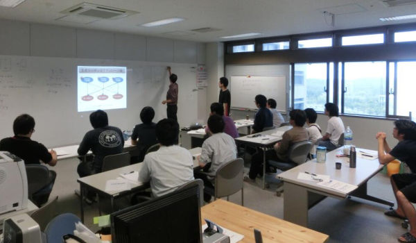

定期イベントの紹介
- プログレスレポート
- コロキウム
- Rゼミ
- 勉強会・サーベイ

ゼミには基本的に研究室の学生全員が参加しますが，Rゼミ，勉強会・サーベイについてはドクターやスタッフが中心に活動しています． 現在開かれているゼミは次の4つです．
研究の進捗の他，読んだ本の紹介など研究室以外での活動内容を報告します．
代表になった人が自分の研究のビジョンや目的，現在の進捗について報告し，ラボ全体でその研究内容を把握しディスカッションを行います．
ブレインストーミングを行ったり，理論を1つ1つ丁寧に押さえたり，関係のある論文をまとめ紹介するなどを行います．
他の研究者の話を聞くときや自分の研究内容を話すときに役立ちます．
年間行事
- 4月 お花見
- 5月 オープンキャンパス
- 8月 Postech＆Kyutech
- 9月 高専の研究室との合同ゼミ
- 11月 人間知能システム工学専攻運動会
- 12月 忘年会
- 2月 修論発表会打ち上げ
- 3月 謝恩会＆追いコン
年度初めの恒例行事です．「f-Labのスタート！」です．
新入生歓迎会
新入生の方と親睦を深めます．
f-lab workshop
年に一度の研究室内発表会．学外に出てそれぞれの研究を確認し合いつつ，自分の夢・野望を熱く語ります！
生命体工学研究科のキャンパスを開放して各研究室を紹介します．f-labの魅力をお伝えします！
ソフトボール大会
研究室単位で戦います！ 意外と強い？f-lab！
毎年，開催地を交互に変えながら行っている韓国の大学との交流です．英語でのポスターセッションを行います．
鹿児島高専 濱川研との合同ゼミ．研究熱心な高専生の方々とディスカッションです．
人間知能システム工学専攻全体で行う運動会．果たして結果は・・・？！
今年一年お疲れさまでした！一年を振り返ります．
Master最後の一大行事．頑張ったM2のみなさんと打ち上げです．
卒業される方々を送ります．最後は笑顔で晴れの門出を祝います！
1週間のスケジュール例
M1（前期前半）
古川研究室でのM1は、ゼミと授業をこなしながら研究を進めていきます。 なにかと忙しい毎日になるので時間のやりくりが大切です。 授業は必修の他に、必要とされる単位数を満たすように自分で選びます。
授業は午前8時50分から90分単位で行われます。 連続して3時間行われる授業が多いです。
- 月
- 火
- 水
- 木
- 金
１限目：授業（数学基礎1）
2限目：授業（数学基礎1）
3限目：ゼミ（進捗報告）
4限目：なし
5限目:授業(実践演習英語)
１限目：ゼミ（コロキウム）
2限目：ゼミ（コロキウム）
3限目：授業（工学基礎1）
4限目：授業（工学基礎1）
１限目：ゼミ（勉強会）
2限目：ゼミ（勉強会）
3限目：授業（人間知能システム工学概論）
4限目：授業（人間知能システム工学概論）
１限目：授業（数学基礎2）
2限目：授業（数学基礎2）
3限目：授業（理論言語科学）
4限目：なし
１限目：ゼミ（研究ゼミ）
2限目：ゼミ（研究ゼミ）
3限目：なし
4限目：なし